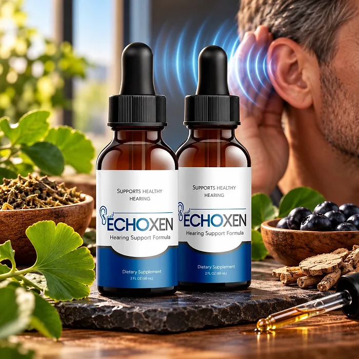
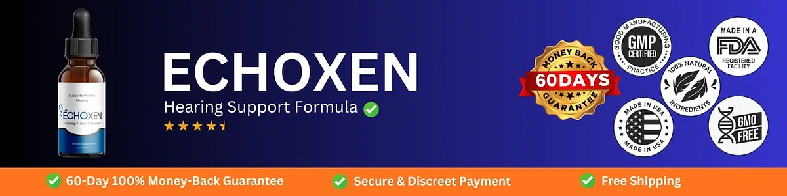

What Is Echoxen And How Does It Work?
Echoxen is a dietary supplement in liquid drop form designed to support healthy hearing, clearer listening, and focus for adults who want to address the muffled conversations, mental fatigue, and listening strain that can build up with age, noise, and busy routines through a natural, dependable approach — without complicated routines or temporary quick fixes.
It utilizes a simple daily serving of liquid drops with a proprietary blend of 18 plant extracts and nutrients, including Mucuna Pruriens, Maca Root, Epimedium, Tribulus, Dong Quai, Muira Puama, Ginger, Catuaba, Damiana, Ashwagandha, Piperine, Sarsaparilla, Asparagus, Vitamins A and B, Zinc, L-Tyrosine, and L-Arginine, to support the ear-brain connection, healthy circulation, and calm, balanced nerves.
The ingredients in Echoxen are herbal extracts, vitamins, a mineral, and amino acids that, according to the official website, are carefully selected to support and enhance ear health, based on the idea that hearing depends not only on the ears but also on the nerve pathways that carry sound signals to the brain.
Rather than acting as a short-lived fix, Echoxen focuses on nourishing the auditory pathway from within, working gradually alongside healthy habits such as protecting the ears from loud noise, to help maintain clear listening and focus.
With consistent daily use, a formula of this kind is intended to help with clearer listening, better focus, and balanced energy, according to the official FAQ, especially when combined with good sleep, regular exercise, and regular hearing check-ups.
From a practical standpoint, Echoxen is a daily hearing support liquid — a quick dose under the tongue, with no pills to swallow.
Made in the USA in a GMP-certified, FDA-registered facility with non-GMO ingredients, according to the official FAQ, and described as natural, gluten-free, stimulant-free, and non-habit forming, Echoxen is designed for regular daily use, focusing on safety, purity, and quality.
Echoxen Ingredients
The official website describes Echoxen as a proprietary blend of 18 premium plant extracts and nutrients, presented in pairs, chosen to support healthy hearing, nerve health, and focus as part of a consistent daily routine:
Mucuna Pruriens and Maca Root: Botanicals included to calm and stabilize the nervous system.
Epimedium, Tribulus Terrestris, and Dong Quai: Traditional herbs that provide antioxidant support; dong quai is described as an ear tonic.
Muira Puama, Ginger, Catuaba, and Damiana: Botanicals rich in antioxidants that support balanced circulation and nerve health.
Ashwagandha and Piperine: An adaptogen for mental clarity, with black pepper extract to support absorption.
Sarsaparilla Root and Asparagus: Plants included to support nerve tissue health.
Vitamin A, Vitamin B, Zinc, L-Tyrosine, and L-Arginine: Nutrients that support healthy neuronal connections, mood, and circulation.
Together, these ingredients are designed to support hearing clarity, focus, and nerve health from within. The official website does not publish the amount of each ingredient, so the bottle label is the reference to check.
Echoxen is designed for daily use, offering a natural, non-prescription approach to supporting hearing wellness, without stimulants or complicated routines.
Echoxen Side Effects
Echoxen is generally considered well tolerated and is designed for adults of different ages and lifestyles who are looking for a safe, natural, and balanced approach to hearing wellness, especially those who prefer an easy daily liquid to support clear listening and focus without resorting to risky solutions with severe side effects.
According to the official FAQ, Echoxen is made in the USA in a GMP-certified, FDA-registered facility with high-quality, non-GMO ingredients and is generally well tolerated, reinforcing consistency, safety, and reliability.
With no widespread reports of serious side effects, Echoxen is generally considered a well-tolerated option. A few points deserve attention: the official FAQ itself warns that people who take prescription medication, particularly for blood pressure, thyroid, or mood, should speak to a doctor first, since ingredients such as mucuna, L-tyrosine, and L-arginine can interact with these medications; several herbs in the blend, such as tribulus and epimedium, are traditionally used for vitality. Sudden hearing loss, ear pain, or dizziness need prompt evaluation by a doctor. It is not intended to diagnose, treat, cure, or prevent any disease, and individual results may vary.
Pregnant or nursing women, people under 18, and anyone with a medical condition should consult a physician before using Echoxen, as the official website recommends, ensuring it fits safely within their personal wellness plan.
Echoxen Dosage
The recommended Echoxen dosage is 1 ml, about two droppers, once a day, according to the official FAQ, and it is designed to fit easily into a daily routine, making consistency simple and convenient.
The official FAQ explains how: hold the liquid under your tongue for around 30 seconds before swallowing to improve absorption. Taking it at the same time each day, for example in the morning, makes the routine easy to remember.
For best results, consistency is key. Each bottle holds 2 fl oz (60 ml), and the official FAQ says most users notice changes within 2 to 4 weeks and recommends continuing daily use for at least 90 days. A detail for careful readers: the FAQ says each bottle lasts 30 days at 1 ml a day, while a 60 ml bottle would last longer at that dose, so it is worth following the directions on your label.
There is no need for complex schedules or multi-step routines. One simple daily dose is designed to build support gradually alongside protecting your ears from loud noise, good sleep, and regular hearing check-ups.
As with any dietary supplement, it's important not to exceed the recommended dose and to check the label on your bottle. Echoxen works best when used regularly, combined with proper hydration, balanced nutrition, and healthy daily habits.
Echoxen – Refund Policy
You can order Echoxen with confidence, knowing that every purchase is protected by a 60-day money-back guarantee. This allows you to try the formula and decide if it delivers the support you expect.
According to the refund policy on the official website, items must be returned within 60 days of receipt, in their original condition and packaging, and consumable items must not be significantly used. The customer pays the return shipping, and the refund covers the amount paid for the product, excluding shipping costs.
How the refund process works: Contact support at info@buyechoxen.com to start the return, then send the product to ShipOffers Returns, 19655 E 35th Dr #100, Aurora, CO 80011. Once the return is received and inspected, the refund is issued to your original payment method. Keeping the box, the bottle, and your order number together makes the process faster, and it helps to email support before shipping so the return can be identified.
Customer Support Contact Information: info@buyechoxen.com, as listed on the official website. Order questions can also be sent to BuyGoods, the retailer.
Refund Processing Time: According to the policy, the refund is issued within 5 to 7 business days after the return is inspected.
This refund policy is designed to give customers a clear and transparent experience when trying Echoxen.
Echoxen Customer Reviews
-
Michael R. — San Diego, CAVerified Purchase – 6 Bottles
“Skeptical at first, but Echoxen worked wonders. My hearing and clarity have never been better!”
-
Emily J. — New York, NYVerified Purchase – 6 Bottles
“Echoxen is amazing! My ears feel great, and the results were quick. Highly recommend!”
Echoxen – Where To Buy
Echoxen is sold through its official website, so if you decide to try it, it's important to be careful about where you purchase it. The official website is the only sales channel the manufacturer lists, and it does not point to marketplaces such as Amazon, eBay, or Walmart.
Listings on third-party platforms may look similar but cannot be verified as authentic, raising concerns about safety, quality, and ingredient freshness. Products purchased outside the official source may not be covered by the 90-day guarantee.
For this reason, it makes sense to purchase Echoxen only through the official website. Buying directly from the official source ensures you receive the authentic original product, made in the USA, with access to customer support and the full guarantee. According to the official website, every order is a one-time purchase, with no subscription or auto-ship, and orders are processed by BuyGoods, the retailer named on the site.
To avoid counterfeit batches and ensure maximum quality, always verify that you are ordering from the official Echoxen website before completing your purchase.
To ensure you’re getting the authentic product, most users choose to visit the official website.
Is Echoxen A Scam?
Based on what the official website discloses, Echoxen does not appear to be a scam. It is a real liquid supplement, sold through an established retailer (BuyGoods), and formulated to support healthy hearing, clear listening, and focus as part of a consistent routine.
The ingredients used in Echoxen are traditional botanicals, vitamins, and amino acids, and the official website lists all 18 of them and what each pair is included for.
In addition to its formula, Echoxen is made in the USA in a GMP-certified, FDA-registered facility, according to the official FAQ, with a support email and a published return address in Aurora, Colorado, with a focus on clarity and simple returns.
The customers quoted on the official website describe clearer hearing and quick results. A fair point of criticism is that many ingredients are herbs usually found in male vitality formulas, the website does not publish the amounts, the FAQ gives a bottle duration that does not match the 60 ml size, and the sales page uses strong claims about rebuilding the ear-brain connection. Results vary from person to person, and no supplement replaces a hearing test or an ear doctor.
Echoxen is backed by a 60-day money-back guarantee, and the return steps and the return address are published on the official website, which gives customers a clear path if the product does not meet their expectations.
If you're looking for a simple daily liquid to support hearing clarity and focus without complicated routines, Echoxen is worth considering — especially when purchased directly from the official website.
For those who want to verify product details or check current availability, the official Echoxen website remains the safest option.

Check Availability On Official Website
